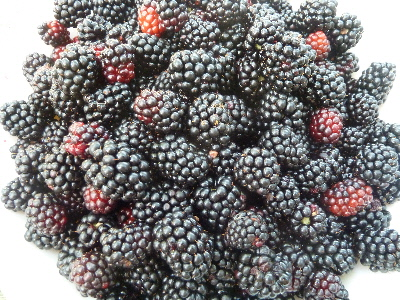
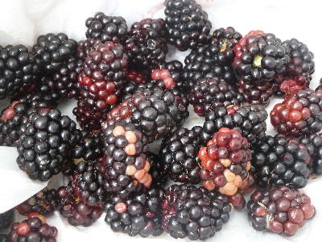
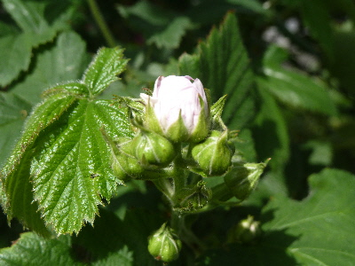
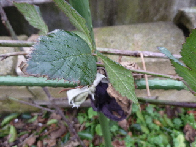
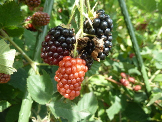
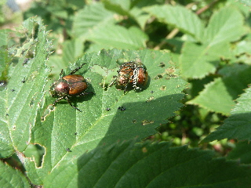

遊びで植物を育てよう
2016/07/23
この頃毎週こんな感じです。
ブラックベリーの収獲時期です。

今日もボールいっぱい採れました。
沢山消費したいので、ジャムにしてから牛乳に混ぜて飲んでます。
【ブラックベリーTOP】 【果物TOP】 【園芸TOP】
2016/07/03
ブラックベリーが採れ始めました。
ブラックベリーが出来たんですけど、なんか色がいまいちですね。

なんで白い部分があるのかな？
美味しくなさそう。
ジャムにするのであんまり気にする必要はないかな。
【ブラックベリーTOP】 【果物TOP】 【園芸TOP】
2016/05/01
ブラックベリーに蕾が沢山付いています。
今年も沢山実が出来そうです。

ブラックベリーは簡単に育てれていいですね。
食べるのも簡単だと文句ないんだけどなー。
【ブラックベリーTOP】 【果物TOP】 【園芸TOP】
2016/01/31
ブラックベリーを誘引しました。
枝がブラブラしてたので、支柱に紐で結びました。

ちょっと枝が多くて重いかな？って部分はバッサリと切ったので、全体的にスッキリしました。
ごちゃごちゃ込み入ると毛虫が発生する気がするので、少な目くらいが丁度いいかな。
【ブラックベリーTOP】 【果物TOP】 【園芸TOP】
2015/07/11
ブラックベリーの収獲が始まりました。
まだ黒くなっているのは少ないですが、少量のジャムが出来るくらい収穫しました。

ブラックベリーは種が大きくて堅いので取り除くのが面倒です。

今年も虫が沢山葉っぱを食べていました。
去年剪定を沢山したせいか、今年は毛虫が発生しなかったです。
おかげで収穫がとっても楽です。
今年も収穫が終わったらバッサリ切ろう。
【ブラックベリーTOP】
【果物TOP】
【園芸TOP】
巨大化に注意しましょう。
【おいしいものを食べよう。】【たくさん寝よう。】
【ソロ活をしよう!】【季節感のあることをしよう。】【動画視聴はほどほどに。】【当サイトの全てのコンテンツは無断転載禁止です。】